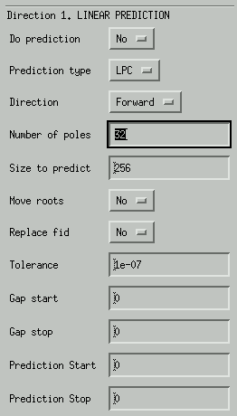
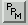
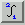
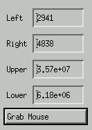
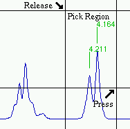

Script: HN { <range> }
Use a window of the form:

Gives the number off points that are prepended at the start of the FID, due to Bruker digital signal processing. A correction suggested by W. M. Westler and F. Abildgaard is applied automatically during Window, Watwa and FT oprations. The number of prepended points is determined during the prepa step from the DECIM and DSPFVS parameters in the Bruker acqu files.
When the DSP correction is active, the prepended points are circular left shited to the end of the FID after zero filling when a Fourier transformation is performed.
For example, if the DSP correction factor is set to 72.0156, the circular left shift performed on the data will be 72 points and the linear phase correction after Fourier transformation is -0.0156*360 = 5.62 degrees.
Note that DSP correction is NOT applied when a discrete Fourier transformation (DFT) is performd.

LPC uses the formula
where each new data point is a linear combination of N previous data points.
HSVD models the data as
Because HSVD does not use the original data to predict new data points, the original fid may be replaced with synthetic data.
The Window Parameter box. The Show Window button has been used to activate the popup box, the shape of the window, calculated with the current parameters, is displayed on top of the FID. The two horizontal lines, one near the top and the other near the bottom, depict the window values 1 and 0, respectively. A value of 1 means that the FID will be multiplied with 1, at that position, etc. It also shows clearly if the window goes to zero at the end. The command line option WD (Window Display) can be used to hide, or re-display, the current window. Alternatively use Display->Show Data to control visibility of the window. The OK button will actually perform the window operation.
Window displayed on top of the FID.
Use a window of the form:
Use a window of the form:

SH = <shift> Must be > 1.0. Typical values: [3..10] for 2D NOE, 2D HOHAHA. [1000] pure sine, for absolute value COSY uses a window of the form:
SH = <shift> Must be > 1.0. Typical values: [3..10] for 2D NOE, 2D HOHAHA. [1000] pure sine, for absolute value COSY uses a window of the form:
LB = <line broadening>Use a window of the form:
where SW is the spectral width in Hz.
LB = <linewidth>
GN = <fraction>
where SW is the spectral width in Hz and GB = GN * <datasize>
LB = <line broadening>
Use a window of the form:
where SW is the spectral width in Hz.
<
IT = <number of points>
Use a window of the form:
SH = <theta> Typical values: [1.5..3]

Where bessi0 is zero order modified bessel function.
Command line: SH <shift>
Command line: LB <line broadening>
Command line: GB <fraction>
Set number of points for Trapezian Multiplication.
Clean up water by convolution of low frequency contribution (marion & bax jmr 84, 425 (1989)). Modified to remove arbitrary peaks by doing a large first order phase correction, to shift the peak to the middle of the spectrum. Originally shift would NOT work for real data, and the peak removed would not be in the middle of the spectrum, but at the left of the spectrum. This is now handled by translating the data to complex (real-to-complex via FT-IFT), and back to real (complex-to-real via FT-IFT) afterwards. Correction for DSP shifted data points is done automatically.
Do on FID in acquisition direction before other processing steps. This
processing step is mainly used to remove the water signal in 2D files.
where cw is the convolution width, and ls determines to what power the line shape is raised. The shape of the convolution window should correspond more ore less with the peak that will be removed. A value of 3 seems to work well.
Example of calculating shift by hand: The time domain has a size of 4096. Do a FT without zero filling. The water line (or other big peak) is now expected at 4096/2+1 = 2049. However, if the maximum of the water peak is at another position, say 2042, then shift should be set to -7. The spectrum is shifted by applying a shift*360 first order phase correction on the FID. After water wash, the spectrum is shifted back.

Select peak from spectrum, and spectrum after Watwa modification
of the FID.
Command line: FT <zerofill>
Script: FT <zerofill>
{, <mode> }
Fourier mode can be Real, Imaginary or Complex. The default is to use Complex FT for complex data and Real FT for real data.
Zero fill gives the number of zerofill operations performed on the FID before Fourier transformation. The default value is 0. The size of the FID is always set to a power of 2, before a zerofill operation or a Fourier transform operation is executed. For example, if the FID contains 1000 points, it is first expanded to 1024 points. If zerofill = 1, the number of points is enlarged to 2048, and finally the Fourier transformation is performed.
Scale first point gives the value by which the first data point is multiplied prior to Fourier transformation (default = 0.5).
Via the Menu options Parameters->Fourier mode , the Fourier
mode and zero-fill can also be set prior to Fourier transformation.
Do a Fourier transformation on a FID which size is not a power of 2. The zerofill operation is ignored, because in that case you can better use a fast FT anyway. The algorithm in use is not really a discrete Fourier transform but rather a fast Fourier transform that subdivides the initial problem into smaller problems, by using small prime factors. The algorithm works faster if the data size is made up from small prime factors. In the best case (the data size is a power of 2), it works just as the FFT, in the worst case (if the largest prime factor is very large) it is as slow as a discrete Fourier transform.
A)
To do interactive phase correction, first select P0 from the mouse button bar options. Move the mouse up and down, while pressing button1, until the frequency independent phase is done.
During this operation, the auto scale is disabled to keep the baseline at a fixed position. Press the PL button to re-draw the spectrum with the auto-scale option. Next, select I0 from the mouse button bar. Select a peak that has a correct phase and press the mouse button to define the frequency independent position. Every time when a new I0 position is selected, phase parameter P0 is recalculated to reflect the current value of P1 in the new situation. Hence, I0 can be changed many times without influencing the end result.
Now select P1 from the mouse button bar options. Determine the frequency dependent phase in the same way as the frequency independent phase was determined. One can use PN (Normalize Phase parameters) to recalculate the parameters P0 and P1 with I0 set to 1. This results in parameters that are not dependent on the size of the spectrum.
Use the Biggest button in the I0 box to set the frequency independent position. Use the buttons in the P0 box to adjust the zero order phase, and the buttons in the P1 box to manipulate the first order phase correction. Other, phase related, functions are also provided.Use Set parameters to set or change P0 (=PA), P1 (=PB) and/or I0. Phase can be Do Phase, Power Spectrum, or Absolute Value. For the last two options, P0, P1 and I0 are ignored.
Use Reset parameters to set P0 and P1 to 0 and I0 to 1. The use of PN is as described above.
Warning: Be careful with the use of PK. The phase correction is always done on the current spectrum. Thus, PK is only used when the phase parameters are known and set, but no phase correction has been done yet. Therefore, use the interactive phase correction (method A or B), or set the parameters by hand and use PK.
Command line: PS
Script: PSThe real part of the spectrum is replaced by
PS(i) = real(i)**2 + imaginary(i)**2All values are scaled, by multiplication of the reciprocal square root of the biggest peak.
Command line: AV
Script: AVThe real data are replaced by the absolute value according to (magnitude calculation)
AV(i) = sqrt(real(i)**2 + imaginary(i)**2)
Script: WATERFIT <position> , <width>Remove water or any other big peak from the spectrum. The Process->Water Fit menu item will show the following popup menu.
Peak Position
Enter the peak position in points (channel numbers).Peak Width
Optional peak width (also in points). The points falling into the width region will be set to zero by the fit procedure, and the new waterline will be calculated starting at the left and the right position of this width region. By activating this option, distortions on the slope of the water peak will also be removed. Otherwise, these distortions are taken for peaks and carefully preserved.Calc/Show Waterline fit
Show the result of the fitting procedure.
The result of waterline removal with waterfit.
Script: BC <mode> {, <terms> {, <terms2> } } {, <range> { <range2> } }
Calc/Show Baseline
Show the result of the current baseline settings.
Define regions of the spectrum that should be considered to contain baseline. The baseline correction functions will only be fitted to those parts.
Baseline
Off. No baseline correction is performed.
Baseline type
This options lets you select the type of baseline correction.
Polynomial - uses a polynomial to fit the baseline. The polynomial has the form:
where N is the number op polynomial terms. This means that if the number of poly terms is set to 1, the data is fitted to a horizontal line. If the number of poly terms is set to 2, the data is fitted to y = a1 + a2 * x , etc.
Table Fit - use the contents of Buffer B for the baseline correction. The formulae used is:
where t stands for table buffer B.
Sine - use a sine for the baseline correction, that has the form:
where N is the number of polynomial terms and m is the lower limit polynomial term.
For example, if point 10 in the fid is distorted, a sine with 20 (polynomial) terms will remove this distortion. More terms will remove higher frequencies, and therefore also peaks from the spectrum. Use scripts for more precise control of these types of baseline correction.Cosine - use cosine instead of sine.
Sine+Cosine - use a function of the form:
where N is the number of polynomial terms and m is the lower limit polynomial term.
Spline - Use this option if a spline function has been defined in Buffer B. In fact, the Table Fit option is used after a spline curve has been generated. To use this type of baseline correction for a 2D spectrum, see Spline Baseline Correction.
Auto Spline - With this option, the user is NOT required to define spline control points. The positions of the control points are calculated by dividing the spectrum by the number of polynomial terms, and placing a control point at each separation point. Thus the number of control points is the number of polynomial terms + 1. Using these control points, the baseline is fitted to a trigonometric spline function.
Window
If window is set to 'On', only the regions defined in Buffer A will be fitted for the baseline correction.
Number of polynomial terms
The number of terms used for the polynomial, sine and cosine corrections.
Min sin/cos terms
If this number is greater than 0, it defines the lower limit of terms used for sine and cosine corrections.
Start baseline
First point used for baseline correction. If this number is 0, the first point of the baseline correction will be the first point of the data array.
Stop baseline
Last point used for baseline correction. If this number is 0, the last point of the baseline correction will be determined by the size of the data array.
Waterline
If Waterline is not 0, the baseline is fitted to the left and the right part of the waterline separately. The right hand part is reversed before fitting, and reversed again afterwards. The position of the baseline must be given in points.
Waterline Width
Optional width (in points) defines a region that will not be used for the baseline fit.
Figure shows the result of Calc/Show Baseline, where the Waterline option has been turned on.
From the 'Options' menu select 'Spline Baseline Correction'. This will activate the popup menu shown below. Press 'Reset Spline'. With the left mouse button, select the baseline points. The spline curve will be calculated during this process, and displayed in red. Press 'Close Spline'. Select 'Spline' from the 'Baseline' option in the baseline parameter popup menu. Press the 'BC' button on the menu bar, or type BC on the command line.

Y mode: Follow spectrum - When a point is selected, the y value of this point is taken from the spectrum. When baseline points are selected, this is the best option. Follow cursor - When a point is selected, the y value of this point is taken from the cursor. This is useful to define a control point that is not on the baseline.
Init mode: Exterpolating - The spline curve does not passes through the control points. This gives usually the best results. Interpolating - The spline curve passes thought the control points.
Reset Spline - Set buffer B to zero. Remove previously defined control points. Set some initial control points at the left of the spectrum.
Close spline - Add some terminating control points to the right.
Re-calc Spline - Previously defined control points are used to re-calculate the spline curve. this is useful if, for example, the 'Init mode' is changed.
Read spline - Read previously defined control points from disk. Essential in 2D processing.
Write spline - Write previously defined control points to disk.
Grab Mouse - Set the left mouse button to Select Spline (Buf
B), as described above.
Example of spline baseline correction. A. The initial spectrum with distorted baseline. B. The initial spectrum with spline curve. C. The result after baseline correction.
Now the left mouse button can be used to select parts of the spectrum (regions). The selected regions will be marked by a red line near the top of the spectrum. The unselected parts of the spectrum will have a red line near the bottom of the spectrum. Go from left to right to select a region, and from right to left to deselect a region.
Spectrum with three selected regions.
For 2D processing, the regions needs to reside on disk. From the 'Options' menu select the option Process->Baseline Tools->Define Window (region ). This will activate a popup menu with the options:
Clear Region -Set all points in the region Buffer A to zero.
Read Region - Read regions from disk into Buffer A.
Write Region - Write the regions, defined in Buffer A,
to disk.
Grab Mouse - Define the first mouse button as described
above.
A spectrum is calibrated by selecting a position in the spectrum with the mouse and defining this position in ppm or Hz. First select from the mouse menu the function  . Then select a reference peak in the spectrum an press mouse button 1. A popup box appears where one can type the reference value in ppm.

This reference position is internally converted to the channel number at 0 ppm (or Hz). To make the calibration independent of the amount of zero filling by Fourier transformation and by read- and write operations of parts of the spectrum, the reference position is scaled to the size of the original FID and an offset is added. The factors that are used can be viewed and edited by selecting Utilities->Calibrate. This gives the following popup menu.
Reference channel at 0 ppm = xref * aref + bref - 1
Where aref = spectrum_size/td and bref = store_start of a previous write operation.
Grab Mouse button 1 sets the mouse button to Calibrate.
Use the Utilities->Integration 1D menu item to popup the menu:
Simple 1D integration routine. One way to calculate integrals is to
give the left and right positions of the integral (in channel numbers), and
then press Calc Integral. Better, use Grab Mouse Button 1 to
activate the left mouse button or activate this button via 
. Select a peak by pressing the left mouse button at one side of the peak,
and releasing it at the other side.
The list of integrals can be printed in the terminal window with
Print Integrals or written to disk with Write to disk. The
button Clear list will remove all integrals from the list.
Use the Utilities->Peak Picking 1D menu item to popup the menu:

This to select a region in which peaks should be picked. Left an Right are in channel numbers. One can also use the Grab Mouse button to select the region with the mouse, or set the mouse-button selection by hand in the mouse-popup menu as follows:
Define Mouse Button 1 as 'Peak pick,
Select a Peak Pick Region by pressing the left mouse button at one side of the region and releasing at the other side. The lowest Y-value of the mouse cursor during the press- and release-operations, determines the lower threshold and the highest value the upper threshold.

Select first position in the spectrum, and press mouse button1 one. Select the next position and release mouse button 1. The delta x and delta y are printed in the current axis units, for example:
dx = 0.440 ppm, dy = 2.619e+06